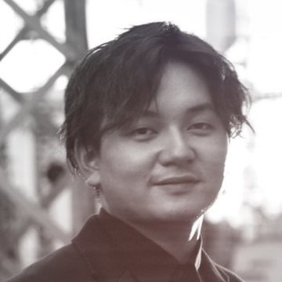
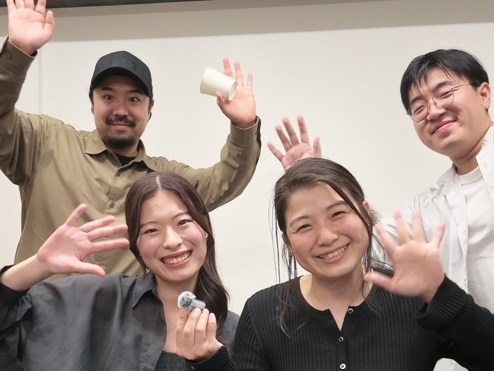
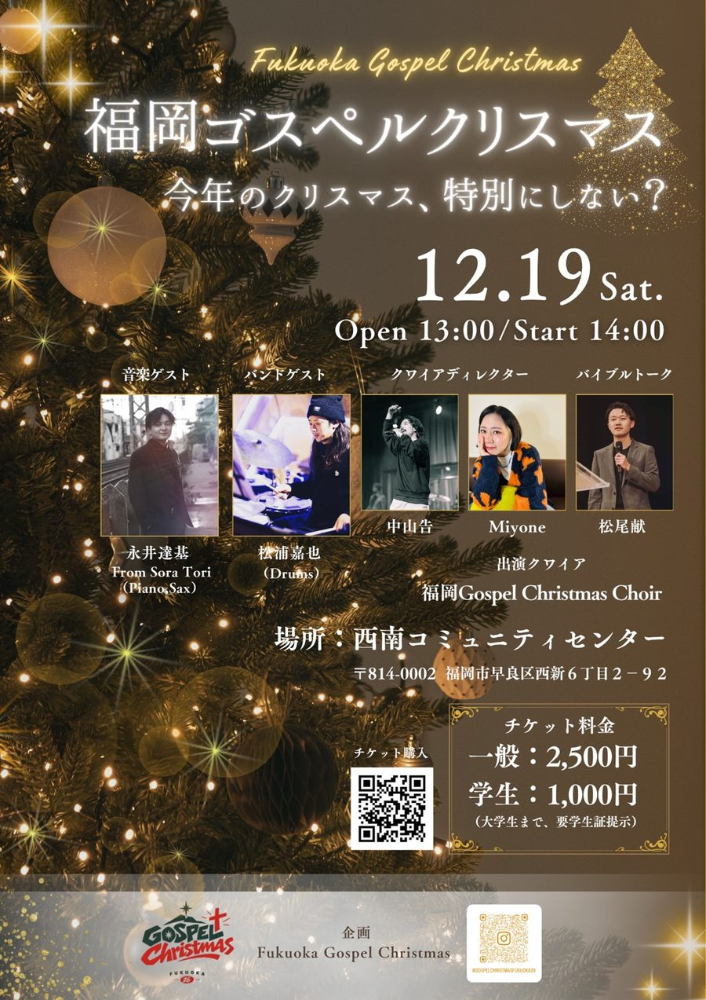

音楽ゲスト｜Piano・Sax
永井 達基
1998年、大阪府生まれ。東京藝術大学音楽学部卒。YouTubeチャンネル「Sora Tori / そらとり」で演奏と作曲・編曲を担当。
今年のクリスマス、特別にしない？
福岡ゴスペルクリスマスは、福岡の教会とクリスチャンが心をひとつにして準備している、ゴスペルのクリスマスコンサートです。
ゴスペル（Gospel）は「福音」、つまり「良い知らせ」という意味。イエス・キリストの誕生の喜びを、若い世代のクワイアとゲストミュージシャン、生バンドの音でお届けします。
クリスチャンの方も、教会に行ったことがない方も、どなたでも大歓迎です。
恐れることはありません。見なさい。
私は、この民全体に与えられる、
大きな喜びを告げ知らせます。
今日ダビデの町で、あなたがたのために
救い主がお生まれになりました。
この方こそ主キリストです。
30歳以下のメンバーが、秋からワークショップを重ねて準備してきたユースクワイア。ブラックゴスペルのアレンジで、生バンドと一緒に歌います。
YouTube「Sora Tori」の永井達基さんがピアノとサックスで。7年ぶりに同じステージに立つ中山告さんとMiyoneさんのステージも。
会場のみんなで声を合わせて賛美する時間と、クリスマスの本当の意味を伝えるバイブルトーク。はじめての方も安心してお楽しみください。
この日のために、それぞれの場所から集まってくださった方々です。

1998年、大阪府生まれ。東京藝術大学音楽学部卒。YouTubeチャンネル「Sora Tori / そらとり」で演奏と作曲・編曲を担当。
11歳で教会の演奏をはじめ、19歳でロサンゼルスへ。現地で学びながら多くのミュージシャンと共演し、2024年に帰国。
福岡県生まれ。シンガーソングライター、ゴスペルピアニスト、牧師。約6年間の渡米生活を経て、2025年からソロ活動を始める。
福岡県出身。シンガーソングライター、ゴスペルシンガー、ボイストレーナー。2019年からソロで活動し、全国47都道府県で路上ライブを行う。
熊本・木山キリスト教会 牧師。元小学校教師。KGK（キリスト者学生会）九州地区主事として、長く学生たちと歩んできた。
30歳以下のメンバーによるクワイア。学生も社会人も、秋からワークショップを重ねて準備しています。
この日のために集まった仲間たちの、秋からの準備と祈りを映像でお届けします。
ユースクワイアとスペシャルバンドによるゴスペルステージ。会場のみんなで声を合わせる場面もあります。
ピアノとサックスで届けるクリスマス。
7年ぶりに同じステージに立つ二人の歌。
松尾献牧師が、聖書の話を楽しく、わかりやすく語ります。はじめて聖書にふれる方も安心してお聞きください。
最後はみんなで一緒に賛美。キャンドルの灯りの中で、クリスマスの喜びを分かち合います。
※ 内容・順番は変更になる場合があります。

クワイアのメンバーが集まり、ワークショップで練習を重ねています。
たくさんの方が集まり、福岡市民クリスマスに関わる方からも「必ず成功すると思います」と励ましの言葉をいただきました。
街に出て、クリスマスの歌を届けました。
本番前、もう一度街へ。見かけたらぜひ足を止めてください。
西南コミュニティセンターでお待ちしています。
お申し込みは下のフォームから。
お支払いなどの詳細は、フォームの案内をご確認ください。
※ 早割チケットの受付は11月24日で終了しました。
ご不明な点は Instagram のDMでお気軽にお問い合わせください。
このコンサートは、福岡の教会とクリスチャンが協力してつくっています。
日本では、クリスマスの主役がだれなのかを知る人は多くありません。
この日を、大切な人に良い知らせを届ける機会にしませんか。
週報やSNSでのご紹介、チラシの設置など、教会のみなさまへお知らせいただけると大きな力になります。
教会に来たことのないご家族や友人を、ぜひ誘ってください。はじめての方にも楽しめるプログラムです。

教会での掲示や、SNSでのシェアにご活用ください。印刷用データや部数のご相談は、Instagram のDMからご連絡ください。
この働きは、祈りから始まっています。
ご自宅で、教会の祈祷会で、心を合わせていただけたら感謝です。
心を一つにし、声を合わせて、
私たちの主イエス・キリストの父である神を
ほめたたえるためです。ローマ人への手紙 15章6節